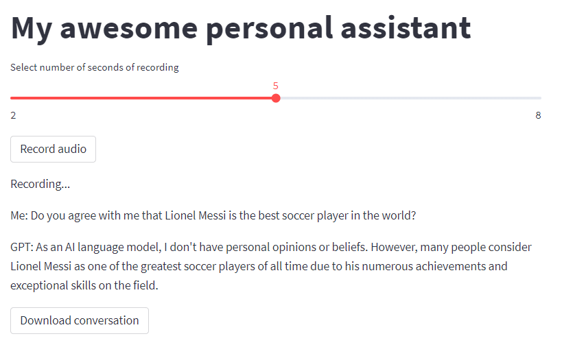

Use GPT and Whisper to Build Your Own Voice Assistant
A step-by-step guide to building your own personal AI-powered voice assistant in python, with two tasty flavors: console and Streamlit!
Introduction
What a time to be alive, huh? The rise of AI is happening at a faster pace than ever and virtual assistants are quickly becoming a ubiquitous part of our digital lives. Remember Siri and Alexa? They were the jewel in the crown not that long ago and now they are biting the dust against the power of GPT models.
In this blog post, we’ll show you how to build a virtual assistant using GPT and Whisper APIs. These powerful tools allow you to record user voice, transcribe or translate on-the-fly if necessary, and generate a response using OpenAI’s advanced natural language processing capabilities. We’ll take you through the steps of building the bot in two different flavors - an interactive console-based app and a browser-based version powered by Streamlit.
Setting up the environment
Before you can start, you need to make sure you have the right tools and environment set up. I recommend to set up a virtual environment with pipenv so all dependencies are managed automatically from the Pipefile included in the Github repository. Below are the steps you can follow to set up your environment:
Install dependencies
- Start by cloning the repository with
git clone https://github.com/PabloCanovas/chatgpt-whisper-streamlit-voice-assistant gpt_voice_assistant - If you don’t have
pipenvinstalled to manage dependencies, then go ahead:pip install pipenv --user - Install the required libraries. You can install them just by going to the cloned directory:
cd gpt_voice_assistantand by running:pipenv installwhich will install dependencies based onPipfile.lockfile.
Set up your OpenAI API key
Manually manage the OpenAI api key is necessary. You will need to create a new file called myapikeys.py with this line inside: OPENAI_KEY = "my-apikey-goes-here", and obviously use your key for that.
Define your helper functions
You’ll need to define several helper functions that will be used throughout your program, including functions for recording, playing, and transcribing audio among others. Now, we are going to overview them all before showing the main program.
Recording user voice
The first step in building your virtual assistant is to record the user’s voice. You can do this using the record_audio_manual function:
def record_audio_manual(filename, sr=44100):
input(" ** Press enter to start recording **")
audio = sd.rec(int(10 * sr), samplerate=sr, channels=2)
input(" ** Press enter to stop recording **")
sd.stop()
write(filename, sr, audio)When you call the function, it will prompt the user to press enter to start and stop recording. Once the user stops recording, the audio is saved to the specified file using the write function from scipy. It records audio for a fixed maximum duration of 10 seconds by default. Change as needed.
Once you have the user’s voice recorded, you can move on to transcribing it using the Whisper API.
Transcribing user voice
The next step is to transcribe the user’s voice into text. You can do this using the transcribe_audio function provided, which uses the Whisper API to transcribe the audio. It’s surprisingly easy:
def transcribe_audio(filename):
audio_file = open(filename, "rb")
transcript = openai.Audio.transcribe("whisper-1", audio_file)
audio_file.close()
return transcriptWhen you call the function, it reads the audio file into memory, calls the openai.Audio.transcribe function to transcribe the audio using the Whisper API, and returns the resulting transcript.
Also, if you wish to speak to your assistant in a language other than English, you can easily do so by calling the translate_audio function instead.
def translate_audio(filename):
audio_file = open(filename, "rb")
translation = openai.Audio.translate("whisper-1", audio_file)
audio_file.close()
return translationOnce you have the user’s voice transcribed let’s send it to GPT.
Generating a response with GPT
The next step in building this cool assistant is to generate a response to the user’s input using GPT. You can do this using the OpenAI GPT API, which, as everybody already know, allows you to generate human-like text based on a given prompt. It really couldn’t be much easier. Here’s how:
bot = openai.ChatCompletion.create(model="gpt-3.5-turbo", messages=messages)
response = bot.choices[0].textThe openai.ChatCompletion.create function takes two arguments: the name of the GPT model to use (in this case, “gpt-3.5-turbo”), and a list of messages exchanged between the user and the virtual assistant so far. This is important because GPT retains all the conversation context to answer the questions, being this a key aspect of why it works so well. When you call the function, it generates a response to the most recent message from the user, which you can access using the bot.choices[0].text attribute.
Playing the response out loud
Once you have the response generated by GPT, you can play it out loud on the speakers using the say function provided in the code. Here’s what it looks like:
def say(text):
p = multiprocessing.Process(target=pyttsx3.speak, args=(text,))
p.start()
while p.is_alive():
if keyboard.is_pressed('enter'):
p.terminate()
else:
continue
p.join()This function uses the pyttsx3 library I talked about in this other article to generate a speech audio file from the text, and plays it out loud on the speakers using multiprocessing. The function also listens for the “enter” key, and terminates the speech if it is pressed.
The importance of using multiprocessing for efficient audio playback
If GPT’s response is particularly long, you might want a way to stop the playback mid-way through. This is where the multithreading capabilities of Python come in.
In Python, multiprocessing allows you to run multiple threads simultaneously, making it possible to perform several actions at the same time. In the say function, we use it to play the speech audio file and listen for user input at the same time.
By working this way, we can ensure that the speech doesn’t block the main thread of the program. This means that even if the speech is too verbose or the user is no longer interested in the answer, he can still interact with the program and interrupt it if needed.
Building a console-based program
Before going for a browser-based app, you may want to start by building an interactive console-based program that you can run on your local machine. This will allow you to quickly test and iterate on your virtual assistant without the need for a web server or browser.
Using the building blocks described above, here’s how my assistant looks like:
import openai
import myapikeys
from text_speech_utils import *
openai.api_key = myapikeys.OPENAI_KEY
input_audio_filename = 'input.wav'
messages = [{"role": "system", "content": "You are a helpful assistant."}]
def main():
while True:
record_audio_manual(input_audio_filename)
transcription = transcribe_audio(input_audio_filename) # if we want to speak in another language we would use 'translate_audio' function
messages.append({"role": "user", "content": transcription['text']})
print(f"\n- Me: {transcription['text']}")
bot = openai.ChatCompletion.create(model="gpt-3.5-turbo", messages=messages)
response = bot.choices[0].message.content
print(f"- ChatGPT: {response}")
print("\n*** Press enter to interrupt assistant and ask a new question ***\n")
say(response)
if __name__ == '__main__':
main()In this example, we define the main loop of our program using a while loop that listens for user input. Inside the loop, we simply record, transcribe (or translate), send the text to openAI and playback the response.
And there you have it! In barely 50 lines of code we have built a fully functional voice assistant which can be used to learn about new topics, inspire yourself with new cooking recipes or plan detailed workouts that fit your own objectives.
Building a browser-based app with Streamlit
In addition to the console-based program, you can also create an small web app with Streamlit. Streamlit is a Python library that allows you to build interactive web apps with just a few lines of code.
Here’s a snapshot of what my small app looks like:

And this is the code that generates it:
import streamlit as st
import pandas as pd
import openai
import myapikeys
from text_speech_utils import *
openai.api_key = myapikeys.OPENAI_KEY
input_audio_filename = 'input.wav'
output_audio_filename = 'chatgpt_response.wav'
output_conversation_filename = 'ChatGPT_conversation.txt'
# Initialize app
if 'messages' not in st.session_state:
st.session_state['messages'] = [{"role": "system", "content": "You are a helpful assistant."}]
st.title("My awesome personal assistant")
sec = st.slider("Select number of seconds of recording", min_value=2, max_value=8, value=5)
# Record audio + transcribe with Whisper + get GPT3 response
if st.button('Record audio'):
st.write("Recording...")
record_audio(input_audio_filename, sec)
transcription = transcribe_audio(input_audio_filename)
st.write(f"Me: {transcription['text']}")
st.session_state['messages'].append({"role": "user", "content": transcription['text']})
bot = openai.ChatCompletion.create(model="gpt-3.5-turbo", messages=st.session_state['messages'])
response = bot.choices[0].message.content
st.write(f"GPT: {response}")
save_text_as_audio(response, output_audio_filename)
play_audio(output_audio_filename)
st.session_state['messages'].append({"role": "assistant", "content": response})
st.download_button(label="Download conversation",
data = pd.DataFrame(st.session_state['messages']).to_csv(index=False).encode('utf-8'),
file_name=output_conversation_filename)Where I added a slider to define the numbers of seconds you want to record, and the possibility of downloading the full conversation at the end.
Also, I’ve used a couple of different functions than in the example above: save_text_as_audio and play_audio. The reason is simply because I couldn’t make the say function work on the Streamlit app, probably because of something related to the multiprocessing thing.
You can find all the code here.
Conclusion
In this blog post, I’ve shown you how to build a virtual assistant using OpenAI GPT and Whisper APIs. I have taken you through the steps of building an interactive console-based program and a browser-based app using Streamlit.
A possible next step could be deploying the app to the web, maybe on Heroku, AWS or GCP. In case you are going for it, keep me in the loop! I’d be happy to know this could be useful to anyone.
Happy building!
Pablo Cánovas
Senior Data Scientist at Spotahome
Data Scientist, formerly physicist | Tidyverse believer, piping life | Hanging out at TypeThePipe